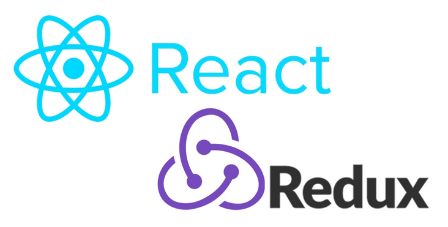
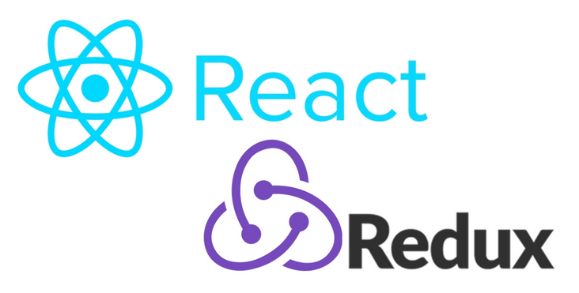
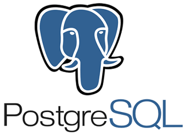
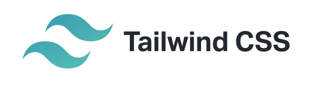
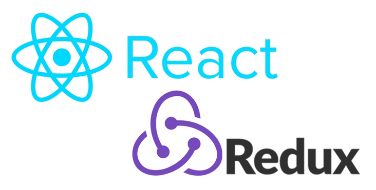
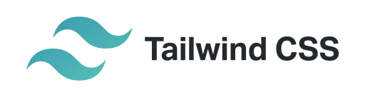
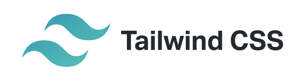
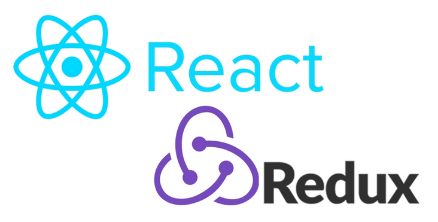
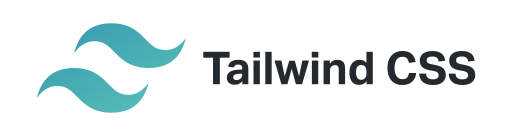

Languages and Frameworks
 


 





Frameworks: React, Redux, Node.js, Express.js, JWT, MongoDB, Tailwind CSS
-Full stack application that allows users to register, log in, and post thoughts on a central feed. User can like other posts as well as edit their profile and look back at old posts.
-Posts, Users, and Likes are stored using MongoDB and styling was done with Tailwind CSS. Redux was used to store User information from page to page for easier access.

Frameworks: Node.js, Express.js, JWT, PostgreSQL, ElephantSQL, Bootstrap
-Backend application for finding new podcasts which allows users to register, log in, and create favorites from a wide range of new podcasts.
-Podcasts were populated using Listen Notes API and a database was created in ElephantSQL to store registered users and their favorite podcasts.

Frameworks: React, JSX, CSS
-React app that allows the user to flip cards and find matches. Matched cards stay flipped and others flip back.

Frameworks: HTML, JS, CSS, Bootstrap
-Frontend application which uses OpenAI to create a unique fortune for each user based on the city they live in.
-Users enter their city and Weather API pulls up current temp which is fed to OpenAI which generates a unique fortune based on the weather.